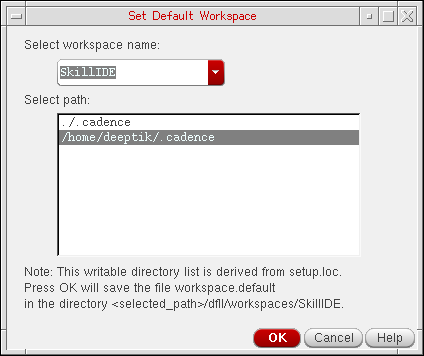

Setting the Default Workspace
To set a workspace as the default workspace,
-
Choose Windows – Workspaces – Set Default.
The Set Default Workspace form is displayed.
 -
From the Select workspace name drop-down combo box, select the workspace you want to use as the new default.
This workspace will appear for each subsequent invocation of the current application or view type. -
Optionally, select the path where you want to save the default workspace specification to.
All writable locations in your Cadence Search File (CSF) will be listed. - Click OK to set the new default workspace for the current application.
Related Topics
Return to top